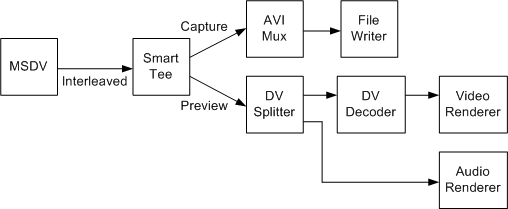

[The feature associated with this page, DirectShow, is a legacy feature. It has been superseded by MediaPlayer, IMFMediaEngine, and Audio/Video Capture in Media Foundation. Those features have been optimized for Windows 10 and Windows 11. Microsoft strongly recommends that new code use MediaPlayer, IMFMediaEngine and Audio/Video Capture in Media Foundation instead of DirectShow, when possible. Microsoft suggests that existing code that uses the legacy APIs be rewritten to use the new APIs if possible.]
A type-1 DV AVI file contains a single interleaved stream. To capture a type-1 file while previewing, use the filter graph shown in the following diagram.

Filters in this graph include:
Build this graph as follows:
ICaptureGraphBuilder2 *pBuilder; // Capture graph builder.
IBaseFilter *pDV; // DV capture filter (MSDV)
IBaseFilter *pAviMux // Avi Mux filter.
// Initialize pDV (not shown).
// Create and initialize the Capture Graph Builder (not shown).
// Create the file-writing section of the graph.
hr = pBuilder->SetOutputFileName(&MEDIASUBTYPE_Avi,
OLESTR("C:\\Example1.avi"), &pAviMux, 0);
// Render the capture stream.
hr = pBuilder->RenderStream(&PIN_CATEGORY_CAPTURE, &MEDIATYPE_Interleaved,
pDV, 0, pAviMux);
// Render the preview stream.
hr = pBuilder->RenderStream(&PIN_CATEGORY_PREVIEW, &MEDIATYPE_Interleaved,
pDV, 0, 0);
// Remember to release all interfaces.
For both calls to RenderStream, the media type is MEDIATYPE_Interleaved, meaning interleaved DV video. In this code, the Capture Graph Builder automatically adds every filter that is needed, except for the MSDV capture filter.
Â
Â